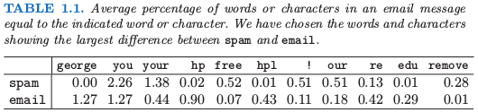

The Elements of Statistical Learning 笔记
1 Introduction
This book is about learning from data.
Supervised learning
There is a training set of data containing:
- outcome
- features
We build a prediction model, or learner, from the training set. Then we use the learner to preict the outcome for new unseen objects.
Unsupervised learning
There is only the features, without the measurement of the outcome.
Example 1: Email Spam
Data
There are 4601 email messages that
- labeled by
mailorspam(the outcome) - along with frequencies of 57 most commonly used words (the features), see Table 1.1

This is a classification problem.